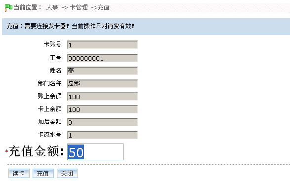
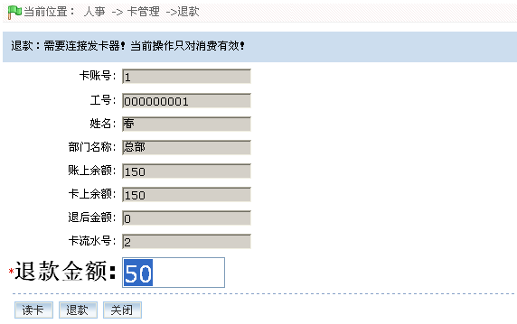
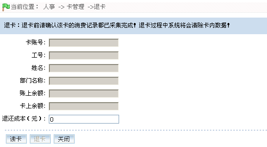
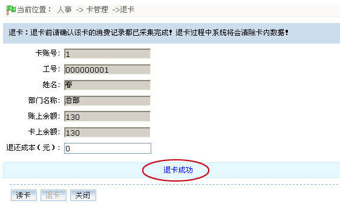
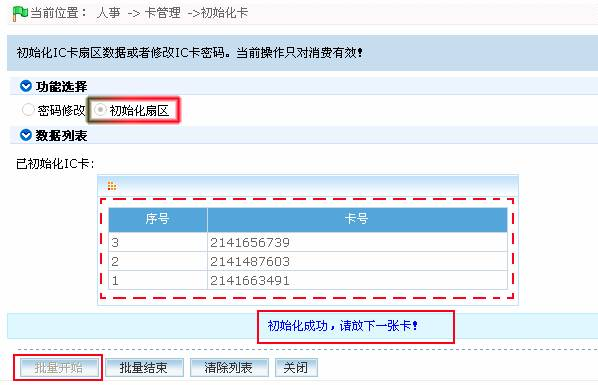
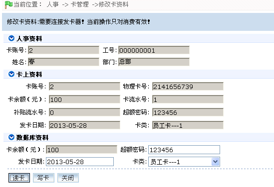
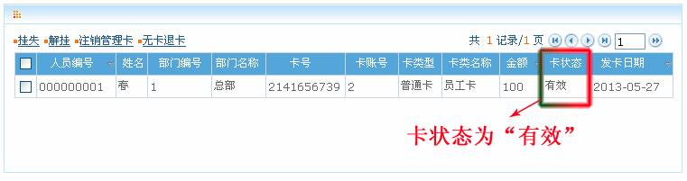

4.6 卡管理
IC消费系统--卡管理
在卡管理中，用户可以进行发卡、充值、退款、退卡、初始化卡和修改卡资料等操作。此外，在此页面中用户还可以进行卡管理的相关操作，包括挂失、解挂、注销管理卡和无卡退卡。
（1）、在卡管理过程中，操作正在进行时，请勿移动卡片（卡片须置于发卡器的置卡处），以免操作失败。待操作成功后，方可移开卡片。
（2）、在进行卡管理操作前，请先修改消费参数中的“系统密码”（默认密码为123456），否则无法进行卡管理操作。消费参数的设置，请参见IC--8.10 消费参数。
IC--4.6.1发卡
为人员分配卡号，以便人员进行考勤和消费操作。
1、发卡器使用说明
发卡器通过USB接口与PC相连，发卡器操作时会蜂鸣。直到不蜂鸣了就表示发卡器操作完成，方可将卡片拿开。
2、发卡的具体步骤
（1）、点击【人事】 【卡管理】
【卡管理】 【发卡】，进入如发卡页面，如下图所示：
【发卡】，进入如发卡页面，如下图所示：

根据需要进行各参数设置，具体设置方法如下：
卡类型：选择卡类型，可选择为普通卡、管理卡或操作卡。
人员：单击 按钮，在弹出的人员选择框中，选择需发卡的人员。
按钮，在弹出的人员选择框中，选择需发卡的人员。
检测卡片已登记人员：获取在新增人员或人员编辑页面中登记卡号的人员信息。
卡账号：由系统自动累加生成，不可更改。
卡成本（元）：输入卡成本。（退卡时可以退还。）
管理费（元）：输入管理费。（退卡时不退还。）
超额密码：默认为123456，用户可根据需要修改，只支持6位数字密码。
消费卡类：选择卡类。卡类设置，请参见IC--8.6 卡类资料。
（2）、设置完成后，（确保已连接发卡器）将卡片置于发卡器的置卡处，单击【制卡】按钮，开始制卡，待成功后，系统给出“制卡成功”的提示，即发卡成功。
 注意：一人仅能发一次卡。
注意：一人仅能发一次卡。
IC--4.6.2充值
该操作，是为已发卡充值。
1、点击【人事】 【卡管理】
【卡管理】 【充值】，进入充值页面：
【充值】，进入充值页面：

2、连接发卡器，并将需充值的卡放在发卡器的置卡处，然后单击【读卡】按钮，读取卡片信息，如下图所示：

3、在“充值金额”后，输入需充值的金额，并单击【充值】按钮，开始充值。充值成功后，页面提示“充值成功”，如下图所示：

此时页面将显示充值成功后的卡信息，如下图所示。
IC--4.6.3退款
 注意：只有卡上余额大于0且处于正常状态下的卡（即非挂失卡）才能进行退款操作。
注意：只有卡上余额大于0且处于正常状态下的卡（即非挂失卡）才能进行退款操作。
1、点击【人事】 【卡管理】
【卡管理】 【退款】，进入退款页面：
【退款】，进入退款页面：

2、连接发卡器，并将需退款的卡放在发卡器的置卡处，然后单击【读卡】按钮，读取卡片信息，如下图所示：

3、在“退款金额”后，输入需退款的金额，并单击【退款】按钮，开始退款。退款成功后，页面提示“退款成功”，如下图所示：

 注意：退款金额不能大于卡上余额，否则退款不成功。
注意：退款金额不能大于卡上余额，否则退款不成功。
IC--4.6.4退卡
退卡的具体方法和步骤如下：
1、点击【人事】 【卡管理】
【卡管理】 【退卡】，进入退卡页面：
【退卡】，进入退卡页面：

2、连接发卡器，并将需退卡的卡放在发卡器的置卡处，然后单击【读卡】按钮，读取卡片信息，如下图所示：

3、在“退还成本”后输入需退还的成功，然后单击【退卡】按钮，开始退卡。退卡成功后，页面提示“退卡成功”，如下图所示：

（1）、只有有效卡（非挂失卡）才能进行退卡操作。挂失的卡片需先解挂方能退卡（解挂操作，请参见IC--4.6.8 解挂）；或通过无卡退卡方式进行退卡；
（2）、卡上余额不为0的卡，进行退卡操作时，不会进行退款操作（退款操作，请参见IC--4.6.3 退款）。
IC--4.6.5初始化卡
用户可以通过初始化卡操作来进行密码修改和扇区初始化操作。一般而言，所有IC卡的初始密码都为空。为保证数据安全，请选择密码修改并设置卡密码。请务必紧记该密码，机器密码须与此密码保持一致，否则该被加密初始化的卡将不能在机器上使用。
单击【人事】 【卡管理】
【卡管理】 【初始化卡】，进入初始化卡页面：
【初始化卡】，进入初始化卡页面：

-
 密码修改（本文以原密码为“111111”的卡为例。若卡密码为空，则单击选中“空密码”即可。）
密码修改（本文以原密码为“111111”的卡为例。若卡密码为空，则单击选中“空密码”即可。）
1、点击密码修改后的单选框 选中密码修改，然后在“原密码”后输入“111111”。
选中密码修改，然后在“原密码”后输入“111111”。
2、将卡片放在发卡器的置卡处，单击【批量开始】进行密码修改，待成功后，系统给出“初始化卡成功，请放下一张卡”的提示字样，如下图所示：

3、数据列表中将显示已修改密码的卡片的卡号。若需继续操作，则拿开已成功初始化的卡片，再放置需要初始化的卡片即可；若无需继续操作，则点击【批量结束】按钮结束操作，或单击【关闭】按钮，直接返回上一界面。
-
初始化扇区（清空卡内数据）
1、点击初始化扇区后的单选框 选中初始化扇区。
选中初始化扇区。
2、将卡片放在发卡器的置卡处，单击【批量开始】进行初始化，待成功后，系统给出“初始化卡成功，请放下一张卡”的提示字样，如下图所示：

3、数据列表中将显示已初始化扇区的卡片的卡号。若需继续操作，则拿开已成功初始化的卡片，再放置需要初始化的卡片即可；若无需继续操作，则点击【批量结束】按钮结束操作，或单击【关闭】按钮，直接返回上一界面。
IC--4.6.6修改卡资料
该操作用于修改卡片的发卡日期、超额密码和卡类。
1、点击【人事】 【卡管理】
【卡管理】 【修改卡资料】，进入修改卡资料页面：
【修改卡资料】，进入修改卡资料页面：

2、连接发卡器，将卡片放在发卡器的置卡处，单击【读卡】按钮，读取卡片信息，如下图所示：

根据需要修改卡资料，具体修改方法如下：
-
发卡日期：可修改，选择日期的方法，请参见附录1 常用操作中的2. 选择日期。
-
超额密码：用户超额消费时须输入的密码，默认状态下为123456。可根据需要修改。
-
卡类：可根据需要修改，卡类的设置请参见IC--8.6 卡类资料。
3、修改完成后，单击【写卡】按钮开始写卡，将修改后的卡资料写入卡片内。写卡成功后，页面提示“卡资料修改成功”，如下图所示：

4、单击【关闭】按钮完成修改卡资料操作，并返回卡管理页面。
IC--4.6.7挂失
当用户遗失卡片的时候，可以进行挂失操作，以避免卡被恶意使用的情况。
 备注：卡状态为有效的卡，才能进行挂失操作。
备注：卡状态为有效的卡，才能进行挂失操作。
挂失的具体步骤和方法如下：
1、单击【人事】 【卡管理】，进入卡管理页面。
【卡管理】，进入卡管理页面。
2、在卡列表中，选中需挂失的卡，然后单击卡列表左上方的【挂失】按钮，进入挂失卡的确认页面，如下图所示：

3、单击【确定】按钮，挂失被选中的卡，并返回卡管理页面，此时卡列表中被挂失的卡的“卡状态”显示为“挂失”，如下图所示：

 备注：挂失后的卡，仅当解挂后，才能正常消费。解挂操作请参见IC--4.6.8 解挂。
备注：挂失后的卡，仅当解挂后，才能正常消费。解挂操作请参见IC--4.6.8 解挂。
IC--4.6.8解挂
 注意：只有挂失的卡才能进行解挂操作。
注意：只有挂失的卡才能进行解挂操作。
解挂的具体步骤如下：
1、在卡管理页面的卡列表中，选中需解挂的卡（“卡状态”为“挂失”），然后单击卡列表左上方的【解挂】按钮，进入解挂卡的确认页面，如下图所示：

2、单击【确定】按钮，解挂被选中的卡，并返回卡管理页面，此时卡列表中被解挂的卡的“卡状态”显示为“有效”，如下图所示：

IC--4.6.9注销管理卡
本操作对应的是管理卡和操作卡，普通卡无法进行注销管理卡操作。
具体操作步骤如下：
1、在卡管理页面的卡列表中，选中需注销的管理卡（“卡类型”为“管理卡”），然后单击卡列表左上方的【注销管理卡】按钮，进入注销管理卡的确认页面，如下图所示：

2、单击【确定】按钮，注销被选中的卡，并返回卡管理页面，此时卡列表中将不再显示已注销的管理卡。
IC--4.6.10无卡退卡
当用户丢失卡片，需要退卡时，可以使用该操作进行退卡。无卡退卡对应的操作对象的卡类型为挂失卡。
 提示：为了保证账目准确，执行当前操作前请确保已经采集所有设备上的数据！
提示：为了保证账目准确，执行当前操作前请确保已经采集所有设备上的数据！
具体操作步骤如下：
1、在卡管理页面的卡列表中，选中需无卡退卡的卡（“卡状态”为“挂失”），然后单击卡列表左上方的【无卡退卡】按钮，进入无卡退卡的确认页面，如下图所示：

2、单击【确定】按钮，开始退卡，并返回卡管理页面，此时卡列表中将不再显示已退卡的卡。